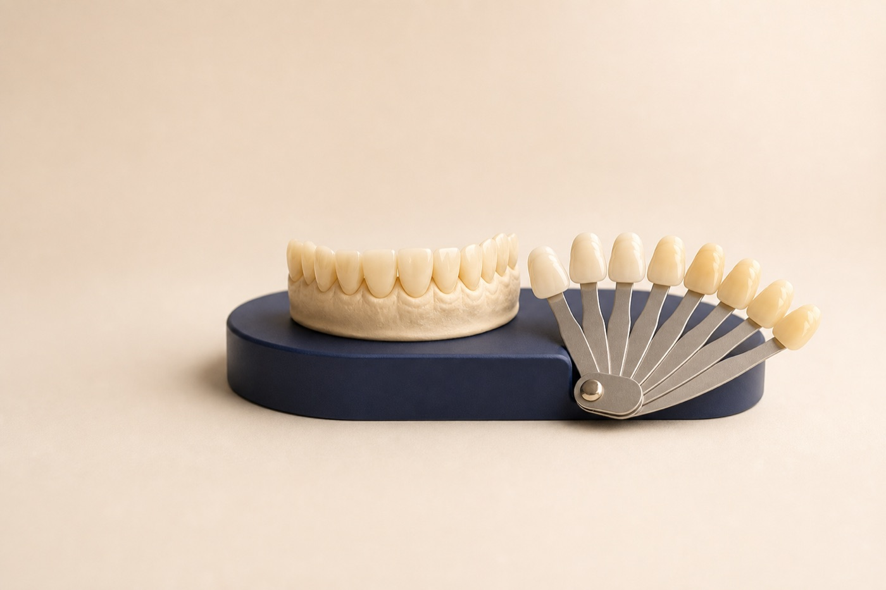

Examine
Confirm teeth and gums are ready for whitening.
Professional teeth whitening in Renton, WA
Professional whitening can lighten many common stains with supervised products and instructions tailored to your starting shade, restorations, sensitivity, and smile goals.

Your treatment path
The right product and schedule depend on your teeth and tolerance.
Confirm teeth and gums are ready for whitening.
Record the starting shade and identify restorations.
Follow the recommended application and sensitivity plan.
Use touch-ups and habits that fit your result.
Whitening response varies. Some internal discoloration may respond incompletely and could require other cosmetic options.
Set expectations first
We identify which teeth are natural, which are restored, and whether surface stain, internal discoloration, or translucency will affect the outcome.
Natural teeth often become warmer or darker with time.
Coffee, tea, red wine, and tobacco can contribute to visible discoloration.
Whitening first can help establish the shade for future bonding, veneers, or crowns.
What we evaluate
Cavities, cracks, recession, exposed roots, and leaking restorations can contribute to sensitivity or uneven results.
Teeth whitening FAQ
No. Whitening changes natural tooth color but does not change porcelain, crowns, veneers, bonding, or fillings.
Temporary sensitivity can occur. Product strength, application time, existing sensitivity, and a personalized plan can affect the experience.
Results vary with diet, tobacco use, oral hygiene, and natural tooth changes. Periodic touch-ups may be appropriate.
An exam can identify cavities, cracks, gum recession, or restorations that may affect comfort, safety, or the final color match.
We can help you choose a whitening plan that fits your teeth and future cosmetic goals.